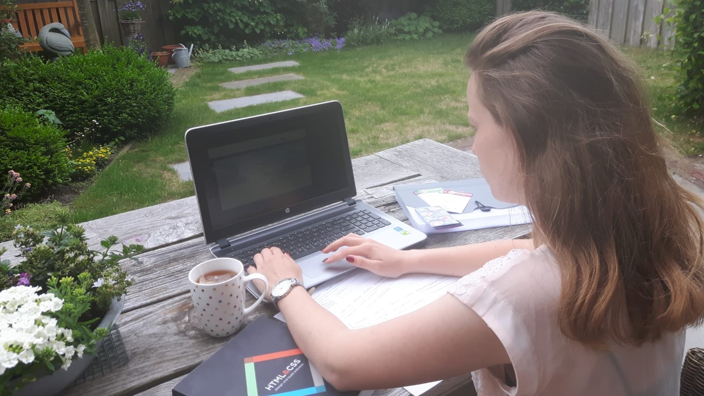
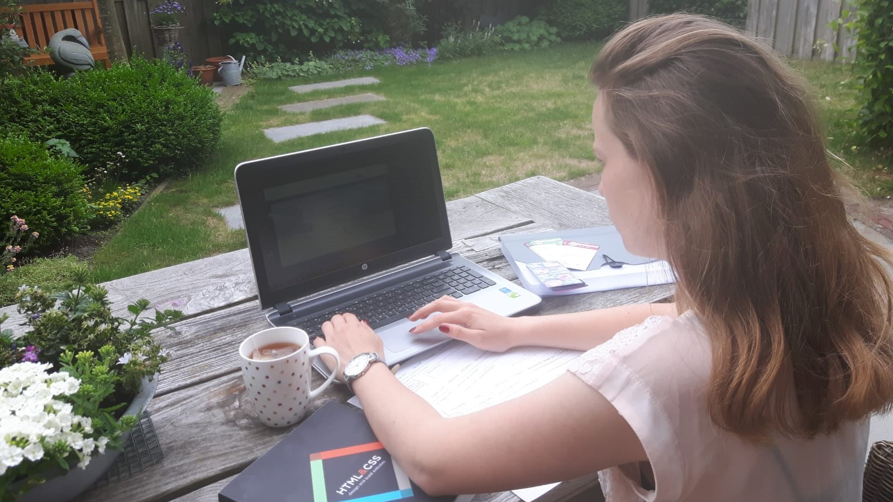

Over mij
Ik als IxD'er
Ik sta in mijn omgeving bekend als iemand die hard werkt om iets te behalen. Dit komt doordat ik erg perfectionistisch ben en niet tegen onaf gerond werk kan. Daarom zet ik mij altijd 100% in voor de taken die ik krijg. Het optimisme in mij zorgt ervoor dat ik ook tijdens zware tijden doorzet.Ik onderscheid mezelf als persoon ten opzichte van andere Interaction designers doordat ik creatieve oplossingen kan toepassen, ik een nieuwe zicht op dingen heb, ik gestructureerd werk lever en ik goed in samen werken ben. Ik neem tijdens samenwerkingen graag een leidende rol. Wanneer iemand in het team niet goed meewerkt probeer ik hem positief te motiveren in plaats van boos te worden. Op deze eigenschap krijg ik veel positieve reacties. Kortom, ik ben een leidend, georganiseerd, zelfstandig, veel eisend, ijverig en vooral een enthousiast persoon die graag creatief bezig is.
Hobbys
Naast de opleiding heb ik nog meer hobby's en ben ik erg slecht in stilzitten. Aan de foto's in het portfolio is bijvoorbeeld te zien dat ik gek ben op de natuur en ga ik graag avonturen aan. Ik breng de grootste tijd naast de opleiding door bij familie, vrienden of ben ik op het hockeyveld te vinden.
 



Kenmerken
Ik ben net een camera. Het kan inzoomen en focussen. It captures the good times. En als het niet lukt, just take another shot. Bekijk de kenmerken die bij deze kwaliteiten horen.
Prioriteiten stellen
Focussen
Gevoel voor details
Inzoomen
Goede ideen
Captures the good times
Doorzetter
Als het niet lukt, just take another shot!